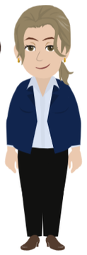

Karen
Meet Northviken · chapter 3 of 8
- Welcome to Northviken
- DEAHL-Connect
- Meet the people
- The rooms
- Timeline and scenes
- How it has been used
- What’s new
- Build on it

Leaders · age 47
Outpatient Services Manager
Nine years at Northviken, four in her current role. Came up through nursing, respected by her staff and trusted by senior management. The person who makes things happen, and who carries the weight when they stall.
“These aren't KPI problems. These are readiness problems.”
- Takes go-live figures as a sign of success, and is starting to doubt them
- Pressed from above by the director and from below by stretched staff
- Can convene a working group, and does: the turning point of the story
Usually found in: Karen's office, Small meeting room.
Scenes
- Scene C: Karen and the figures68 per cent against 91 per cent, and Karen's own list of what staff have told her. The figures and the reality do not match.
- Scene D: Karen convenes the working groupThree findings in sixty minutes. A partial resolution, and the starting point for the action plan.
- Scene K: Jonas's eight-week ticket'Under review' for eight weeks. He writes an e-mail to Karen, and deletes it.
- Scene Q: Fatima's missing functionsNo home-visit template, no antenatal questionnaire, not in the registry. She e-mails Karen: the start of a maternity working group.